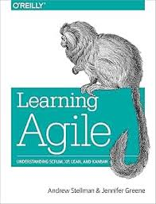

Sep 01, 2025

Watch the video on YouTube
This year marks the 48th anniversary of the launch of the Voyager 1 and Voyager 2 probes. To celebrate their epic journey through the solar system and to honour the people behind the spacecraft - especially the software engineers - I made this little video. Hat tip to open-source tool kdenlive which I used to edit it.
I particularly recommend the BBC documentary 'Voyage to the Final Frontier', which goes into detail on the problems the engineers had to contend with, and how they managed to fix them from so far away. The song is 'Olalla' by Blanco White.
Jun 12, 2025

I remember reading this one a while ago when I first acted as Scrum Master for an Agile team and finding it really useful. I thought I'd revisit it to see how it holds up.
Overall Impressions
I'm still impressed by the breadth and depth of coverage the book manages - while keeping your attention with frequent vivid stories depicting how teams trying to use Agile can trip up or experience problems. It manages to give a quick but thorough run-down of general Agile principles and then a whistle-stop tour through the most commonly used Agile methodologies, comparing them and examining what the experience of teams using these techniques might look like, day to day. I think the book was a great grounding for me when I was new to the world of Agile, but I also appreciate the insights I can glean from it now after more experience. The anecdotes definitely ring true and are one of the best parts of the book - they remind me of a 'business novel' like The Goal, with characters who you end up rooting for to learn more of the Agile principles and succeed. I could see myself and colleagues at different times in the past in quite a few of them!
Cargo Cult Agile
A concept occurred to me while reading the book (I'm sure I'm not the first to think of it). It covers a lot of the sorts of situations explored in the book. Richard Feynman memorably described 'Cargo Cult Science' in a speech at Caltech:
" In the South Seas there is a Cargo Cult of people. During the war they saw airplanes land with lots of good materials, and they want the same thing to happen now. So they’ve arranged to make things like runways, to put fires along the sides of the runways, to make a wooden hut for a man to sit in, with two wooden pieces on his head like headphones and bars of bamboo sticking out like antennas—he’s the controller—and they wait for the airplanes to land. They’re doing everything right. The form is perfect. It looks exactly the way it looked before. But it doesn’t work. No airplanes land. So I call these things Cargo Cult Science, because they follow all the apparent precepts and forms of scientific investigation, but they’re missing something essential, because the planes don’t land."
In the same fashion, there are many examples of what I'd call 'Cargo Cult Agile' - companies that appear to have implemented Agile, that claim to practice it - but if you dig down below the surface and observe their actual practices (and results) you must conclude that they are not really practicing Agile. In the best cases, they have taken a lot of Agile ideas and good practices and are using them to help their business - but haven't committed to all parts of a technique or methodology ('Scrum-But'). At worst, they've just renamed their existing business processes to make them sound more Agile.
For instance, a lot of software businesses run a daily stand-up meeting for each team. Perhaps they do this because they've heard it's a good idea, or it might be that it's embarrassing not to, these days. But if you were to be a fly on the wall at that meeting you might find it's devolved into a daily status report to a boss, or that not everyone gets a chance to speak, or that it drags on for far longer than a stand-up should and everyone's sitting down because their legs get exhausted. Likewise, I'm sure that many people share the experience of being on a team that's pressed for time, on a tight deadline imposed from above, and begins to throw Agile practices by the wayside. If practicing Scrum, it feels as if there's not enough time to perform some of the Scrum ceremonies, so we won't do a Sprint Review this month, or we won't plan the next Sprint right away but just launch into doing things. But in reality every technique that's dropped leaves you less in control of your project's trajectory, stuck firefighting and unable to surface long enough to focus on what's really important.
The business stories in the book dig into this sort of situation and explore how and why it can come to be. The Scrum concept of 'Scrum-But' fits in well with a lot of the anecdotes in the book - ie when someone describes their Agile practice as 'Scrum, but we don't do xyz'. Sometimes everyone gets tired and lapses into a less effective way of doing things, but the most insidious is when a company have tried to adopt Agile, because they hear it's best practice, but don't really want to change the way they do things. So they neglect or ignore the parts of Agile that threaten the way they already operate.
The worst part of Cargo Cult Agile is that it leaves the impression on people - particularly graduates who don't have a wide experience - that this is what Agile means. They're often left with a lasting distaste for the labels of concepts that are supposed to help energise and jell a team. If your regular 'stand-up' meeting lasted 45 minutes and you often didn't get the chance to speak because it was dominated by senior engineers discussing issues with each other in depth as you leant against the wall and tried to stifle your yawns ... you're not going to be keen on going to stand-up meetings in future. And if you become a senior engineer, perhaps you'll feel it's OK to dominate Stand Ups with your longwinded technical discussions, since that's how you learned about the idea of a stand-up. This is not good for our discipline's professionalism.
There are valiant attempts to fight these tendencies by Agile practicioners worldwide. Training offered by the Scrum Alliance attempts to put the practice of Scrum in particular on a more professional footing, and it's a good sign when a company sends its employees on Certified Scrum Master training as a matter of course - it means they are more likely to have some form of committment to Agile. But there can still be a large disconnect - a chasm - between the ideals that someone learns on a training course, and the reality they experience when they return to the office.
Another avenue through which Agile can get more successful adoption is hiring Agile coaches to work alongside teams for weeks or months and coach them in the practices and techniques of Agile in person. These folks have a daunting job indeed. Not only do they have to convince the cynical programmers that they're working alongside that this management fad (for they will have lived through many) will actually make a positive difference to their work lives - they also have to convince top management that it is worthwhile. Often, organisations will have lived through multiple unsuccessful attempts at transforming software delivery into an Agile process. The pinnacle of success in Agile adoption is always fragile. It only takes a little more institutional inertia, a little more doubt from management to reverse such a transformation entirely.
Fundamentally at odds
It's easy to pick up a simplistic idea of Agile, but hard to put the principles into practice, because they involve things that management in particular is uncomfortable with - giving up control to the development team, not knowing in advance all the details of what will be made, trusting the people who will do the work to estimate the time it will take. As Thomas Lindquist points out, fundamentally what's going on here is a collision between the egalitarian values of Agile with the typical command-and-control corporate structure.
"The hard truth is that Agile and Traditional Management still don’t get along. In repeated polls of people working in many different firms where Agile and Scrum are being implemented, somewhere between 70 to 90% report tension between the way Agile/Scrum teams are run in their organization and the way the rest of the organization is managed. Generally less than 10% reported 'no tension.'" Steve Denning, Is Agile Just Another Management Fad?
This is a bit of a depressing realisation, because it means these problems are baked into many organisations from the start. Those who wish to implement Agile can naturally expect resistance, a constant struggle to preserve the ideals of the methodologies against the tendencies of their own organisation, unless they are lucky enough to work for a smaller organisation or one with a more egalitarian structure (or for themselves, of course).
As Jurgen Appelo observes in the foreword to Michael Sahota's 'Agile Survival Guide' (which I highly recommend for thinking about this problem),
"People don’t struggle so much with the adoption of Agile practices. They struggle with the transformation to the Agile mindset, because many organizational cultures actively resist it."
Why do they actively resist it? Sahota compares it to T-Cells in the immune system, designed to kill foreign elements in the body (organisation). When one team makes a successful transformation to Agile ways of working, they experience a reaction from other parts of the organisation - unless they can disguise themselves as appearing to do 'business as usual'. In one of his suggestions, this takes the form of a useless Microsoft Project Plan that has no value to them or their customers but is required by the organisation for their team to work without further disturbance. Sahota suggests that Scrum is actually too powerful a tool - he points out "Scrum is designed to disrupt existing power and control structures by creating new roles (Product Owner, Scrum Master, the Team). It also posits self-organizing teams as the fundamental building block of organizations. As such, it should be avoided if at all possible" as it will inevitably cause conflict and a complete failure of Agile adoption.
What is it that makes organisations so resistant to the very techniques that would help their workers do better work, become more closely connected to customers, have more control over their working environments and thus, be happier at work? Isn't that ostensibly what corporations want for their employees? Well, not really. Outside of vapid public relations exercises, what corporations actually want is what their shareholders want: to extract a maximum of profit from the efforts of their labour force, who they regard as interchangeable Human Resources. This leads to the dark side of Agile:
"[T]he danger [is] that people outside the development team will hear these metaphors and misunderstand them — as a promise of work at a greater intensity and nothing more. Thinking that, apart from that, Agile is business as usual. Still yearning to make more money out of predictability, lower skills and lower wages. Not understanding that the point of Agile is to be Antifragile."
Is your development team stuck in this sort of situation? How did you try to mitigate it? As always, I'm interested to know your thoughts via email.
Jun 24, 2024
 They also serve who only stand and watch construction
They also serve who only stand and watch construction
I'm delighted to say that I recently won a writing challenge, 'Il Campionato Mondiale Di Umari'.
An 'Umarell' is a lighthearted way of referring to elderly men who like to watch construction sites. The practice is apparently so common in Italy that special holes are often included in fences around roadworks to make it easier for these retired guys to enjoy their favourite pastime. But ogling construction work isn't just for retired people! Spencer Wright at Scope of Work explains -
To umarell is to take an interest in the built environment – the environment that our species creates, and in which most of us spend most of our time. An umarell turns their attention to that environment's creation, taking time to appreciate the materials, machines, and muscles from which it emerges. Umarelling is an act of respect and appreciation, and it is for this reason that I am proud to announce the inaugural Campionato Mondiale di Umari – the 2024 World Umarelling Championship.
The championship had three categories: notes, sketches and open text. I won in the open text category with an original poem and was delighted to be sent my own official 'Umarelling' notebook and a T-shirt which I'll wear with pride.
Check out my work and that of the other two winners here!
The challenge was organised by my favourite design and engineering newsletter, Scope of Work, which I've been following ever since I was an undergrad in Manufacturing Engineering. Spencer Wright's newsletter is always one of the things I look forward to most in my inbox. If you like deep dives into how we keep food fresh, the history of soap in a box, or understanding what it takes to put a flamingo inside a beachball you'll definitely enjoy Scope of Work. I can't count the number of times it's introduced me to my latest obsession.
Jun 16, 2022
 I spoke at a virtual conference!
I spoke at a virtual conference!
I was recently invited to speak at Code Newbie's CodeLand 2022. I had a wonderful time at the virtual conference and got the chance to speak with some great people including experts in the field (I was part of a roundtable discussion with Kelsey Hightower, I was starstruck!). Code Newbie's community is a lovely welcoming place for everyone, especially folks who are just getting started in software professionally. I'm definitely interested to go along again next year.
If you'd like to watch my talk, it's still available on demand here
Mar 13, 2021
 He's very new!
He's very new!
I won't be updating this blog for a while as my little one has finally arrived!
We're having a lot of fun (although not a lot of sleep).
May 22, 2020
 Masts of the SS Richard Montgomery. Photo by Clem Rutter, Rochester, Kent CC BY
Masts of the SS Richard Montgomery. Photo by Clem Rutter, Rochester, Kent CC BY
I'd like to introduce you to the SS Richard Montgomery. For those who don't know the story already, it's quite extraordinary.
Towards the end of WWII, a Liberty Ship, the SS Richard Montgomery, ran aground on shifting sands just off the coast of Sheerness at the mouth of the Thames Estuary. She was loaded with over 6,000 tonnes of high-explosive bombs and detonators. Salvage operations managed to remove some of the explosives, but before the ship could be made safe it sank further and salvage was abandoned. The ship and her thousands of tonnes of remaining explosives was then left to sit for over 75 years. She is still there.
One of the most remarkable things about the wreck is her location. She lies in shallow water just 2.4 km from the seaside town of Sheerness. Not only that, but she is less than 200m from a busy shipping lane, and remarkably close to the Grain Liquid Natural Gas Terminal, the largest Liquified Natural Gas facility in Europe.
How dangerous is it?
WWII ordinance turns up every now and then during construction projects. Some unexploded WWII grenades were discovered while building an ice rink in my home town of Cambridge. The discovery triggered a visit from the bomb disposal squad and emergency services, alongside a limitation on flights in and out of Cambridge Airport until the grenades could be made safe.
But the amount of unexploded munitions here is in an entirely different category. There are no clear records of how much ordinance was left on the ship, but according to an official MCA report the ship likely contains more than 9000 explosives including cluster bombs and hundreds of giant 2,000lb 'blockbuster' bombs.It's hard to comprehend their explosive power should they go off.
A New Scientist investigation from 2004 suggests that spontaneous detonation of the entire cargo would hurl a column of debris up to 3 kilometres into the air, send a tsunami barrelling up the Thames and cause a shock wave that would damage buildings for miles around, including the liquid gas containers on the nearby Isle of Grain, which could detonate in turn.
What happens next?
 Suggested locations of new airport in Thames Estuary. By Ordnance Survey with modifications by Prioryman CC BY 3.0
Suggested locations of new airport in Thames Estuary. By Ordnance Survey with modifications by Prioryman CC BY 3.0
Some demolition experts are content to let the wreck lie, hoping that time and tide will reduce the deadliness of her cargo. They argue that any attempt to clear the bombs from the wreck would be riskier than letting her lie. These arguments give the example of the explosion of the Kielce, a smaller munitions wreck which was more than 6km out to sea. A failed salvage operation there in 1967 set off an explosion that measured 4.5 on the Richter scale and damaged property in nearby Folkestone.
However, others disagree and argue that the wreck is actually becoming more dangerous over time. Phosphorous is now apparently leaking from the munitions aboard, evident as flames on the surface of the water where it burns in contact with air. These can sometimes be seen at night by local residents.
Another possibility is a collision. There have already been at least 22 near-misses where shipping traffic only just steered away from the exclusion zone around the wreck in time. One particularly harrowing episode occurred in May 1980 when a Danish chemical tanker, 'Mare Altum', steered aside only minutes before she would have impacted the Montgomery.
There have been persistent questions in Parliament asked about the subject. Recent surveys suggest that the condition of the wreck is rapidly deteriorating, which might lead to a sudden catastrophic collapse. Dave Welch, a former Royal Navy bomb disposal expert, who has advised the government on the SS Richard Montgomery's munitions, says:
"We can’t continue just leaving the wreck to fall apart. Somebody at some point in the next five to ten years is going to have a very difficult decision to make and I would say the sooner it’s made, the easier and cheaper it will be as a solution."
So far, no solution is in sight.
How does this relate to programming, anyway?
Every codebase has its unexploded bombs. Not so potentially serious as the SS Richard Montgomery, perhaps. But our code is out there driving all sorts of things in the real world. If we neglect potentially serious problems, we can harm people just as easily as other kinds of engineers.
Take your bug reports seriously
It can be too easy to dismiss user reports of bugs or accidental misuses of your application. Because we are so familiar with our own code, it can lead to a feeling of contempt for the person who doesn't approach the software in the same way that we do, or have as much knowledge about the underlying structure. And there is of course a natural feeling of defensiveness toward our own work. It can be humbling to find a bug in what you had hoped was well-crafted code, a blow to your ego and confidence as a programmer, perhaps.
This kind of misplaced confidence can be lethal. In the Therac-25 Incidents at least 6 cancer patients were given hundreds of times the desired dose of radiation therapy. This resulted in serious injuries and deaths. The malfunctions were reported early to the manufacturer, who sent engineers to a hospital where one of the lethal accidents occurred. They spent a day running the machine through tests but could not reproduce the critical malfuction, code 54, which only appeared when users typed with a certain fast frequency as experienced operators sometimes could. Because the error that caused the lethal bug was not observed by company investigators, they concluded it was "not possible for the Therac-25 to overdose a patient". It took another tragic accidental death to prove them wrong. This excellent analysis of the accidents dissects the timeline of events and has valuable lessons for us, particularly medical software developers.
We can be falsely confident about our code fixes, too, thinking that they resolve an issue when really they don't. It takes a particular critical, persistent mindset to debug a system well and really fix what the root of a problem was. The excellent rules of thumb in Dave Agans' 'Debugging' book are something I return to time and again when tackling software problems. I encourage you to print out the poster and put it on your wall! One of his key points is that until you can reliably trigger a bug, you don't know what the true cause is or whether a fix has addressed the bug or not. Intermittent faults which only appear under certain conditions, like the problems with Therac-25, can be the hardest things to address.
Listen to the voice of inexperience
Listen to newcomers - interns, new starters, people approaching a piece of the code they haven't worked on before. It's very easy to become habituated to a worrying situation - to live atop an unexploded bomb - and sometimes the only way to snap out of your ingrained habit of dismissing a problem is to listen to someone new worry about it.
I would argue that part of the onboarding process for programmers joining a new team should be to ask them what 'unexploded bombs' they might see in the code. There's usually a "and do you have any questions for us" stage in an internship check-in, for instance, but we rarely take the feedback we recieve this way seriously, or get enough detail to understand what about the codebase might be confusing or painful to work with.
Doing a 'Code Walk' structured walkthrough of the code can be very illuminating. (I highly recommend this talk by Mary Chester-Kadwell - it has really shaped the way I teach and learn about new codebases). In the process, pay attention to the questions your new team-mate asks and reflect on what they say about the health of the different parts of your codebase. Is there anything where when you explain it aloud, it seems convoluted and awkward, or counter-intuitive? Anywhere you particularly wish there was documentation to show your new recruit? Those places may be where problems are lurking.
Pay attention to the jokes
 Mural by Dean Tweedy made for the Promenade Arts Festival in 2015 - photo Andy Hebden
Mural by Dean Tweedy made for the Promenade Arts Festival in 2015 - photo Andy Hebden
Matt Brown, chairman of Sheerness Enhancement Association for Leisure, condemned the mural in the local newspaper, saying:
"If I was a family visiting, whether I knew about the Montgomery or not, I wouldn’t want to be sitting at the leisure park with the kids being reminded you have those explosives out there."
The artist rebutted: "I wanted to make people aware of the Montgomery as it’s part of Sheerness. Some people would like to deny its existence."
The mermaid makes some local people uncomfortable because it reveals a truth about their town they'd rather not have to acknowledge - the ever-present danger to their lives from the offshore explosives. For a certain kind of authority figure, the reminder of a dangerous situation is worse than the actual danger, because without the reminder they can continue to live their lives without having to address the elephant in the room.
 This xkcd strip about data pipelines makes me laugh - but it also makes me think about the robustness of my code.
This xkcd strip about data pipelines makes me laugh - but it also makes me think about the robustness of my code.
Sometimes the equivalent of a Sheerness Mermaid Mural is the only way you can spot a problem that's become engrained in the way your code is put together. Is there a particular XKCD or Dilbert cartoon that seems to epitomise the bugs and problems you're encountering? Perhaps all the developers working on a particular part of the codebase have a set of in-jokes describing the way a certain class behaves itself? A kind of gallows humour about how a module is annoying to use, something that makes you cringe because it's a little too accurate?
These are all clues to what might be underlying dysfunctions of your code. By paying attention to them, you might be able to spot an unexploded bomb and defuse it, before your users discover it and blow things sky-high.
Sep 16, 2019
This is a write-up of a workshop I've given at CamPUG and PyCon UK 2019. It was a lot of fun to deliver, and my participants came away with their own mini-games written in Ren'Py. I was impressed by the range of creative stories, everything from getting lost in Cardiff, storming Area 51, coaxing a grumpy cat, visiting a music festival, going to space, defeating animated fleas, visiting every pub in Cambridge, a child's guide to the Divine Right of Kings, interactive graffiti and more!
I hope this post will be useful as a reference for workshop participants and those who couldn't make it along.
What is Interactive Fiction?
You might be familiar with the concept of interactive fiction from "Choose Your Own Adventure" books.
Ever since computers came on the scene there has been interactive fiction here, too. Zork, one of the earliest examples, is a dungeon-crawling game where the player explores The Great Underground Empire by typing text commands.
Using later tools like Parchment and Twine people are still creating these text-based interactive fiction games. A text-based game I've enjoyed recently is Moonlit Tower by sci-fi author Yoon Ha Lee.
Visual Novels are a genre of interactive fiction that combines pictures and text as a storytelling tool. They originated in Japan and many famous examples such as Fate/Stay Night and Symphonic Rain are Japanese. These games are often romance or relationship-themed, each path perhaps leading to a relationship with a different character.
Ren'Py

Ren'Py is a visual novel creation engine written in Python. It has its own syntax and style, but also allows you to embed pure Python for more complex gameplay mechanics.
It is cross-platform and works on Mac, Linux and Windows. All that you need alongside it is a simple text editor that can convert tabs to spaces, such as gedit.
What can you do in Ren'Py?
Label Jump For Branching Stories

I would humbly suggest my own game The Road Not Taken as a useful introduction to the label / jump mechanic. Take a look in the script.rpy file to follow how the game works. It demonstrates how menus work in the game and how you can use them to move to different choices, similar to a GOTO statement. It also includes an example of embedding music within gameplay to add a mood to a scene. Feel free to copy and modify it as a basis for your own games.
Custom GUI

Hotel Shower Knob, a game where you have to puzzle out an unfamiliar hotel bathroom to take a shower, is a good example of a custom GUI. Inside options.rpy the creator replaced the usual cursor with a custom image of a hand:
## The mouse clicker thingy.
define config.mouse = { 'default' : [ ('cursor.png', 66, 95)] }
This makes for a unique visual experience. As the hand is Creative-Commons licenced, you could use it in your own games, too!
Embedded Python

Because Ren'Py is written in Python (2.7, if you're interested) it's easy to embed Python statements within it to acheive more complex effects such as creating mini-games. There are two ways to do this - prefixing single lines with $ or using an indented block with the python: statement. I used python: statements within Ren'Py to create Card objects for my game Two Worlds.
The key thing to notice is the definition of the Card class:
# Define the card objects used to play the games with
init:
python:
flowers = ["card-front-land-flower%d.png" % i for i in range(1, 3)]
class Card(object):
def __init__(self):
self.face_up = False
self.selected = False
self.number = 0
self.coords = [0, 0]
self.back = "card-back-land.png"
self.front = flowers[0]
self.paired = False
@property
def coord_text(self):
return "{}, {}".format(self.coords[0], self.coords[1])
This happens during the init: block, before the game starts, so it is available from the beginning. I subsequently used this in the sea_game.rpy and land_game.rpy files using the ui.interact() statement and action If to connect it with Ren'Py responses to on-screen clicks.
Persistent Data
Another useful trick is the ability to store persistent data between plays of the game.
 An example from Long Live The Queen
An example from Long Live The Queen
This allows more satisfying gameplay such as unlocking new routes after a complete playthrough, and keeping track of player stats like Strength or Skill. Anything that can be pickled is suitable for this treatment. A simple example:
if persistent.secret_unlocked:
scene secret_room
e "I see you've played before!"
To unlock this path the user must hit a piece of code that sets $persistent.secret_unlocked = True
persistent is a special keyword in Ren'Py, so you shouldn't use it for anything else. Unlike other variables, if you haven't yet initialised it when you reach the if statement Ren'Py won't complain.
Useful sources of free images and sounds for your games
There are various community projects to collect images and sound to use in games with Creative Commons or similar licences.
I've found px here a useful collection of images, particularly photos.
I used Fraqtive to create the card images and backgrounds for Two Worlds.
Useful sound sources include Free Music Archive and for sound effects, Free Sound
Example games written in Ren'Py
Benthic Love – Michaela Joffe, Sonya Hallett
Hotel Shower Knob – Yoss III
Death And Burial Of Poor Cock Robin – Lernakow
Long Live The Queen – Hanako Games
And check out the NaNoRenO game jam each year during the month of March – or better still, take part!
Apr 12, 2019
I recently attended a Certified Scrum Master course taught by Tobias Mayer of Adventures With Agile. I really enjoyed the course and the style in which it was taught. There was no death by Powerpoint! Tobias actually constructed a board on the wall with columns to keep track of the tasks comprising the course, and we added extra task cards for further discussion and questions as we went along.
 Here's what the board looked like near the start of the two day course.
Here's what the board looked like near the start of the two day course.
We held 'Sprints' of an hour or so at a time, diving into aspects of Agile and then reviewing how it went, to improve our group process. Sometimes the teacher would stand and talk about a concept for a while, but mostly the course was interactive, especially during the second day where we broke out into groups for longer sessions.
The exercises we did included 'Point and Go': a game where players stand in a circle and have to
- Point to someone else whose place you want to take
- Wait for them to say "Go"
- Start moving forwards to them
- Before you reach them, they have to find another place to go (and the cycle continues!)
This was unexpectedly hard! It was a metaphor for how difficult it can be to break out of an established pattern of behaviour at work. Even once we got into a rhythm, if things sped up or someone panicked, our orderly pattern fell apart.
Another exercise I enjoyed was coming up with different metaphors for Scrum. We broke out into groups and thought up some different ideas - I was impressed by the variety and how each of them fitted different parts of what Scrum can look like. Some of my favourites were:
- a garden growing and changing over time
- a cocktail bar developing new drinks
- a stand-up comedian working on their routine
- a graffiti crew making a work of art for their neighbourhood
- Jurassic Park (this was mine!)
 A mindmap from my notes about the different Scrum roles
A mindmap from my notes about the different Scrum roles
Following the training, I'm a Certified Scrum Master. There have been some intelligent criticisms of this certification process, including by some of its founders. The fact that there is a certification exam seems to somewhat devalue the training experience itself. I didn't really need to complete the training to do the certification exam - its questions are purely based on the Scrum Guide and a few on the Agile Manifesto. How well can a multiple-choice test about a short document really hope to measure someone's competence in such a fuzzy relationship-centred domain as taking on the role of a Scrum Master? It's always going to fall short, I think. I've acted as a Scrum Master for several years already without the certification, so I was interested to see what it covered and didn't touch on.
I passed the exam. But the things that will really stay with me are the advice of the trainer and the discussions I had during the course, especially with others whose companies are also on the path to adopting more Agile practices. I certainly recommend Tobias as a teacher: his creative exercises and the way he presented the course helped grow my understanding and confidence in the role of Scrum Master. I'd like to attend his Scrum Master Clinic - I think it will really help to have that ongoing mentoring and peer advice.
Feb 10, 2019
I recently started to learn about flex and Bison - a set of parser creation tools for C, C++ and Java. By specifying the grammar and rules for parsing inside two files, blah.y and blah.l, the flex and bison command-line Linux tools will auto-generate an appropriate parser in your chosen language. As you might imagine, this is very handy.
Since it's generally better to show rather than tell when it comes to software tools, here's a toy project I've been playing with in which I'm using them to parse GCODE.
The flex part is what's called a lexical analyser - it uses regular expressions to split the input into tokens. These tokens are used to generate a parser with the Bison part, which is the grammar that tells the parser what do do when certain tokens are read side by side.
What particularly struck me about these tools was just how old they are.

Bison is a descendant of a tool called Yacc (Yet Another Compiler Compiler) which was developed by Steven Johnson working for Bell Labs back in the early 1970s, inspired by Donald Knuth's work on LR parsing. It has been rewritten in many different languages over the years, but the most popular implementation these days is probably Bison, which dates back to 1985, when it was worked on by Robert Corbett. Richard Stallman (yes, that Richard Stallman) made the GNU-Bison tool Yacc-compatible.
Flex meanwhile was written in C by Vern Paxson in 1987, tranlating an older tool called Lex. Lex was originally written by Mike Lesk and Eric Schmidt, and described in a paper by them in 1975. It was initially written in ratfor, an extended version of Fortran popular at the time.As they point out in the paper:
"As should be obvious from the above, the outside of Lex is patterned on Yacc and the inside on Aho’s string matching routines. Therefore, both S. C. Johnson and A. V. Aho are really originators of much of Lex, as well as debuggers of it. Many thanks are due to both. The code of the current version of Lex was designed, written, and debugged by Eric Schmidt"
As you might expect of such venerable tools, they have some excellent tutorials on their use, including an O'Reilly book "flex & bison" - which itself is the "long awaited sequel" to the O'Reilly classic, "lex & yacc". Those who teach in depth about these tools or about parsing are in some danger of re-writing them even more nicely in a favourite language - the linked example is PLY, which was originally developed in 2001 for use in an Introduction to Compilers course where students used it to build a compiler for a Pascal-like language.
I'm fascinated by how tools like this have survived and thrived over what, to computer science, is an enormous amount of time. Perhaps it is because they are beautiful - they have some inherent quality that shines out, no matter what language they happen to be in. I was re-reading the interview with Fran Allen in 'Coders At Work' about beautiful code, and it really resonated.
Allen: One of the things I remember really enjoying is reading the original program - and considering it very elegant. That captured me because it was quite a sophisticated program written by someone who had been in the field a while - Roy Nutt. It was beautifully written.
Seibel: What makes a program beautiful?
Allen: That it is a simple straightforward solution to a problem; that has some intrinsic structure and an obviousness about it that isn't obvious from the problem itself. I picked up probably a new habit from that of learning about programming and learning about a new language by taking an existing program and studying it.
Seibel: How do you read code? Let's say you're going to learn a new language and you find a program to read - how do you attack it?
Allen: Well, one example was one of my employees had built a parser. This was later on for the PTRAN project. And I wanted to understand his methods. It's actually probably the best parser in the world - now it's out in open source, and it's really an extraordinary parser that can do error correction in flight. I wanted to understand it, so I took it and I read it. And I knew that Phillipe Charles, the man who had written it, was a beautiful programmer. The way I would approach understanding a new language or a new implementation of some very complex problem would be to take a program from somebody that I knew was a great programmer, and read it.
Dec 31, 2017
My colleagues and I were discussing legacy code the other day. Someone gave the pretty common opinion that, if there was time, they would of course completely re-write all the legacy code they came across, from scratch. But, since this is not an ideal world and time is limited, they would settle for refactoring what they could. It got me thinking about how my own attitude toward legacy code has changed over time, and why that is.
Indiana Jones and the Lost Code
I spent one summer at university working on a classic legacy code problem. A scientist had written a large piece of Fortran 95 to simulate a manufacturing process for my employers. He had long since retired and there was no way to contact him to ask about his work. As an intern I was asked to add a little bit of extra functionality. They were still using the code and found it reliable, but wanted to add a feature. I felt like an archaeologist, dusting off terse variable names and cryptic comments, trying to understand not only this code but the complex processes it was simulating, too. It was very difficult to get anywhere.
 I wonder if I can replace this function without adding test coverage?
I wonder if I can replace this function without adding test coverage?
My initial reaction - rewrite it! I think most programmers share this instinct. My idea was to tear it down completely and rebuild it, preferrably in a different, more modern language. Then, I felt, I could add the features that were needed. But my manager was adamantly against this. As a summer intern, I would leave soon anyway. If I rewrote the code in another language, where was the benefit to the company? From their perspective, they already had a tool that worked fine. They just needed someone to understand what they already had and improve it a bit. At the time I was frustrated by this. I would tell others the tale with a wistful air - "If only I had had the time to rewrite it properly" I would think, "it would have been so much better". But would it have?
Why Rewrite Code?
I've come across a few different reasons for re-writing code completely. None of them really convince me of their merits anymore.
- To write it in a new language.
The new language is considered to be 'better' - it has features you want, or the old language is considered passe. Fortran 95 certainly wasn't the best language to be writing new code in anymore! For one thing, there was a severe restriction on variable and routine name lengths - in order to maintain backward compatibility with earlier versions of the language, none of the variables was over 6 characters in length, which didn't aid readability. But most cases aren't as clear-cut as this - I think most people wouldn't choose to re-write a large C program in Rust even if they think Rust is a superior language in some respects.
No-one can figure out how the old code works, so we have the idea to learn by doing and completely rewrite it. It's certainly "easier to write code than read it." This is even true of one's own code - returning to something I wrote six months ago, I realised to my regret I left insufficient comments and good names behind - so I had to learn how to understand my own code again, refactoring some of the names once I had worked out what I was doing. But by the same token, if you re-write others' code, there's no guarantee it will be any more readable to the next person - even to yourself, later on. Taking more time to read and understand what the existing code is doing may end up being more valuable. Perhaps one of the problems with this approach is that programmers feel guilty for spending some of their work time 'just reading' other people's code. It doesn't feel like a productive activity in the same way as re-writing. Reading old code just produces understanding in your mind, no tangible output.
- You don't trust the people who wrote the code.
'Not Invented Here' syndrome. Especially since many programmers have poor code reading skills it's difficult to relax and trust unknown programmers. We can't easily just grok their code and be reassured that it's solid - so fear creeps in and the idea of a complete re-write or making our own version from scratch seems more appealing. If your instinct is not to trust the unknown, it becomes even harder:
"You can’t look down on someone when you read their code. If you don’t respect the person writing the code, you won’t be able to apply the energy needed to understand it." - Keiichi Yano @CaptivNation
In the Python world this has mostly been overcome when dealing with third-party modules - for some reason, if you can pip install a library function to do what you want, there isn't the same need to question and look under the hood in mistrust at how it does what it does. The module is generally treated as a black box, whose documentation is all you need to work with it. Perhaps this trust has been built up in the Python community over time and isn't readily extendable to other domains - it's certainly a large factor in the appeal of Python as a language.
And finally the real reason, the one we feel deep-down in our bones: the old code looks bad - it's flaky, it doesn't have any test coverage, the relationship between the parts looks crazy. When you read it, you sometimes want to laugh out loud - it's a big hot mess. There is a strong temptation to start again from scratch out of an aesthetic instinct for perfection.
Why Keep Code?
Joel Spolsky of Joel on Software fame has called rewriting source code from scratch "the single worst strategic mistake that any software company can make". Spolsky uses the example of Netscape 6.0 to demonstrate why as a corporate strategy, complete re-writes are almost never a good idea. They tend take longer than anticipated (because people are bad at working out how long it will take), and burn time and resources for no appreciable reward until the very end when the new code is ready - by which time, a competitor has probably caught up to you and eaten your lunch. There are almost no commercial examples where a complete re-write turned out to be a good idea. Sometimes as a programmer you need to 'zoom out' and take a more general view of your company's trajectory, and how time spent on re-writes and refactoring fits into it.
Of course, companies also need to take care not to pressure their programmers into behaving in this negative way. If you're rewarded based on new code output or some other metric that doesn't take into account the increase in understanding from reading others' code, it can be hard to fight the instinct to re-write code more than you should. Managers should try to grow their programmers' understanding of the existing codebase and allow time for them to read code as an activity of value in itself. Taking a leaf from Peopleware and accepting that 'human resources' are individuals who are not interchangeable and who contain valuable institutional knowledge should help here.
As Joel also points out, 'hairy' legacy code functions embody years of bug fixes and reactions to specific situations. But not only that. Legacy code often embodies knowledge about a process, knowledge that is very difficult to recapture. The writers might have left the company, or been run over by a bus! Re-writing doesn't recapture all the nuances of the understanding embedded in the old codebase, and can leave important institutional knowledge behind. This knowledge might not be documented in any other way. I've lost count of the times an old comment or variable name has led me in a valuable direction to a deeper understanding of changes to our hardware, for example. This sort of thing would be lost, throwing the baby out with the bathwater, if the code had been completely re-written by someone who didn't keep the old comments they didn't understand.
- Refactoring can give the best of both worlds
It can be difficult to get the balance right between too many re-writes on the one hand and leaving flawed, buggy existing code alone on the other. My own experience at CMR has definitely taught me the value of keeping and improving on an existing codebase. Through resisting the temptation to stop and completely re-write parts of the Python codebase, we have come further and faster than we could have done otherwise, and managed to still continue improving as we go along. Refactoring is sometimes used as a synonymn for re-writing, but it's actually a different approach. Refactoring values existing code and makes the base assumption that it is valuable and should be preserved. By adding tests, old code can be refactored with the confidence that bugs won't be introduced. Tweaking variable names and adding explanatory comments is generally harmless and can be very valuable. In this way, incrementally refactoring old code can give excellent results, in less time than a complete rewrite. Your Code as a Crime Scene explains how making improvements to the code can and should be done in a targeted way, rather than by hunches. By focusing on areas with the highest cyclomatic complexity and churn, we direct our energy where it produces the most valuable results. This means the majority of the existing legacy code can be left alone, while still significantly improving the functionality and test coverage.
A Book Recommendation
In the course of my research for this post I came across Code Reading, a book about precisely the discipline reading legacy code in order to maintain it and add features. This looks to be a great primer on a neglected skill for programmers. I plan to read it myself and leave a review here in the New Year.